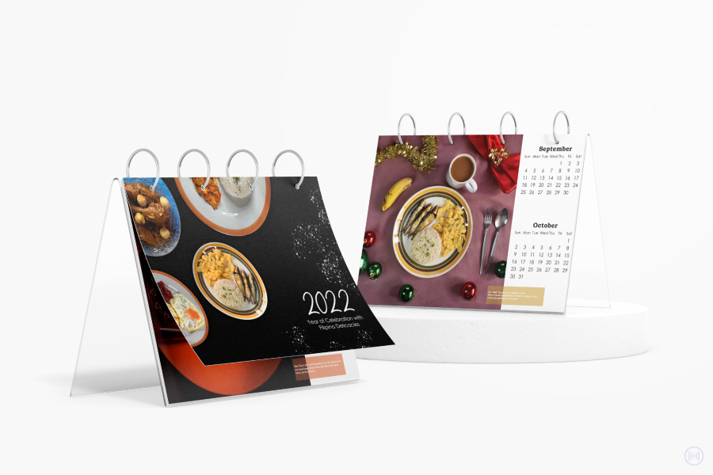
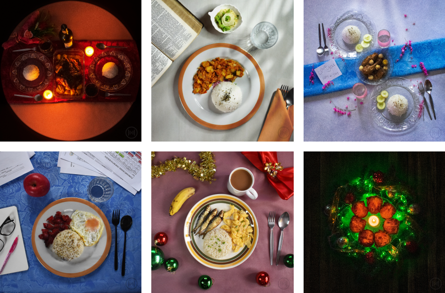

2022 Year of Celebration with Filipino Delicacies
A photo calendar design created as Digital Photography final course requirement.
SKILLS
Creative & Art Direction, Photoshoot, Photo Editing, Photo Manipulation, and Graphic Design & Layout
TOOLBOX
FAdobe Photoshop, Illustrator, and Nikon D3400


The Big Idea
The big idea of this project is to present different foods that brings sentimental impression to Filipinos. Every photo features a meal that are usually served during a specific season that has personal impact and contributes to the Filipino identity.